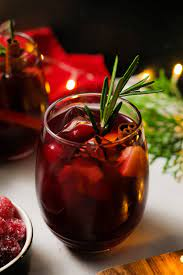

Sangria

Description
After creating a dinner with the handmade pasta and bolognese, we will now make a drink pairing to complete the dinner. Sangria is a mixed drink that is composed of fruits and your favorite wine. This drink tends to be on the sweeter side and it is fantastic to pair with the pasta dish we made. Feel free to sip the night away!
Ingredients
- 1/2 medium apple
- 1/2 medium orange
- 3-4 Tbsp brown sugar
- 3/4 cup orange juice
- 1/3 cup brandy
- 750 ml Spanish red wine
- 1 cup of ice
Steps
- Add apples, oranges, and sugar to a large pitcher and muddle with a muddler or wooden spoon for 45 seconds.
- Add orange juice and brandy and muddle again to combine for 30 seconds.
- Add red wine and stir to incorporate, then taste and adjust flavor as needed. I added a bit more brandy, orange juice and brown sugar. Stir to combine.
- Add ice and stir once more to chill. Serve as is, or with a bit more ice. Garnish with orange segments (optional).
- Store leftovers covered in the refrigerator for up to 48 hours, though best when fresh.